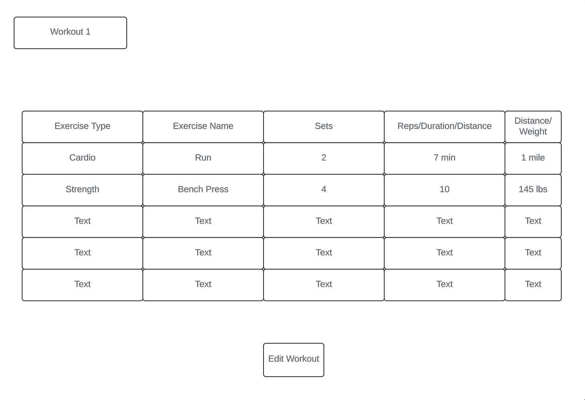
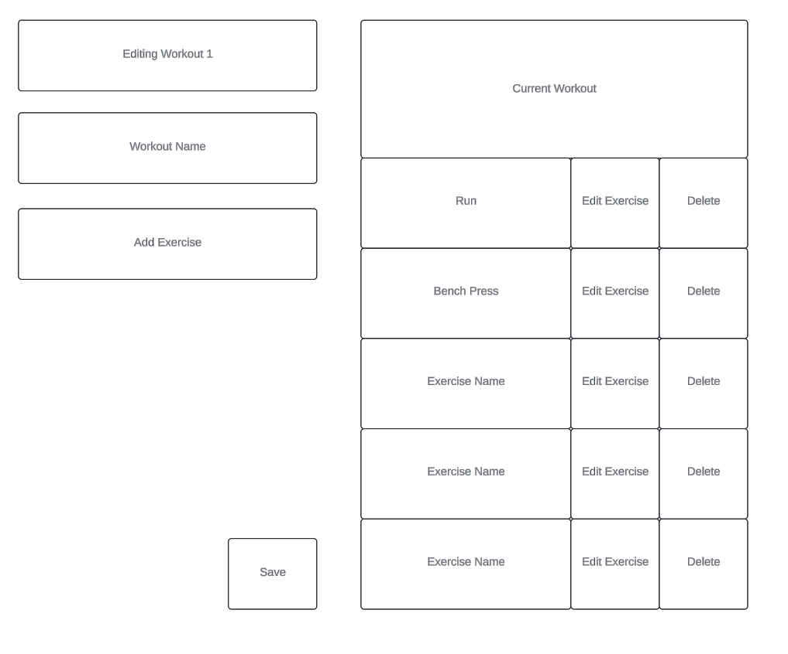
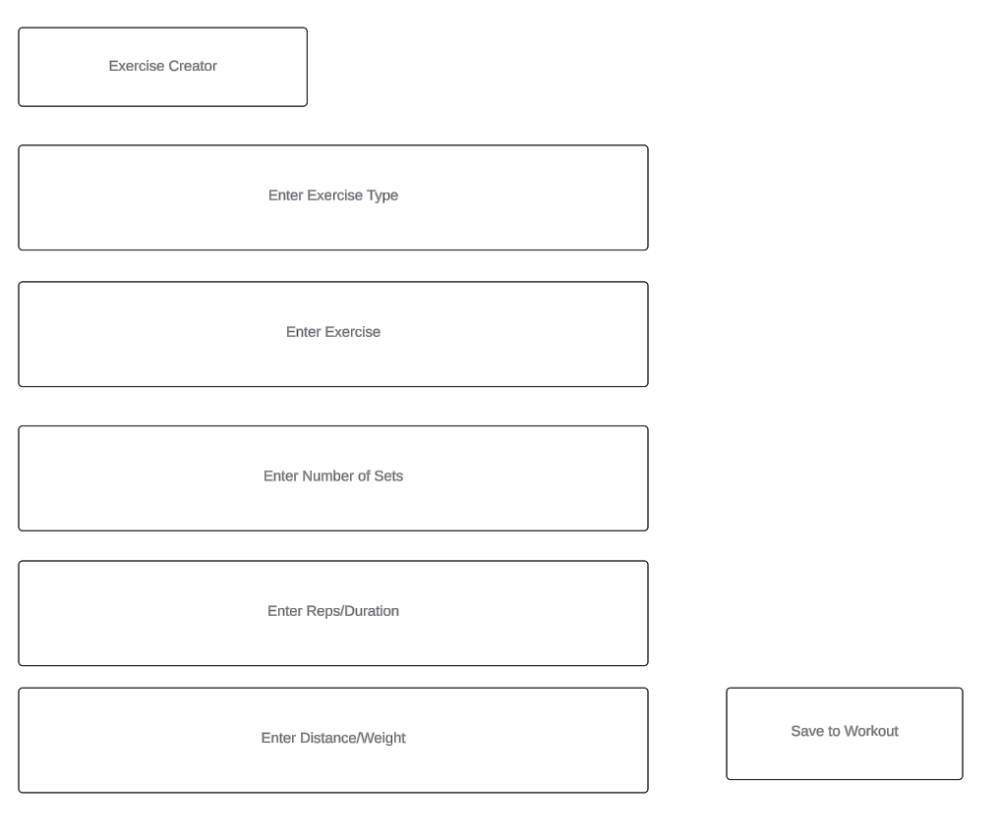
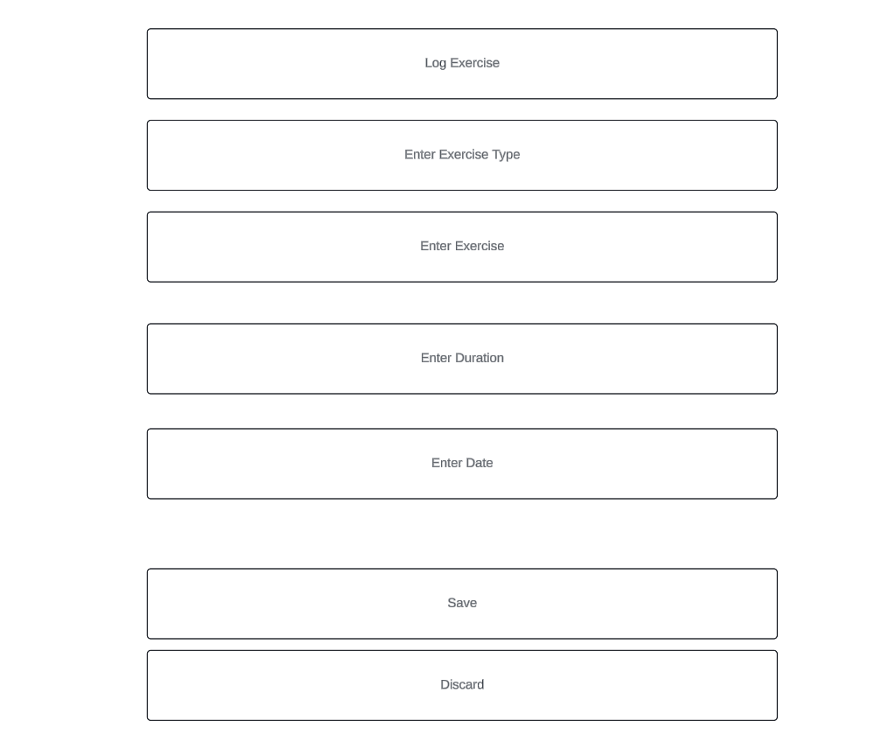

Project Overview
FitTrac is an interactive and comprehensive web application with the users’ goals in mind. No matter your fitness level or experience, this application will have utility for anyone ranging from casual gym goers, advanced powerlifters, or even aerobic athletes such as long-distance runners. This application will be designed to help users track their workouts, fitness activities, set fitness goals, and track their progress on visual charts over time. The platform will also include a social section where users can share their links with other users to share workouts and progress. We aim to provide a personalized experience for users to achieve their fitness goals, whether it be shedding some pounds, getting swole, or improving their aerobic endurance.
Application Parts
Data Requirements
FitTrac is designed as a comprehensive solution for fitness enthusiasts looking to track their workouts, set and achieve personal fitness goals, and engage with a supportive community. Delving into the types of data FitTrac processes reveals how it tailors a unique experience for each user.
Workout Tracker Data:
Central to FitTrac, the workout tracker function is for users to log various exercises, from running to strength training. It captures specific details like the exercise type, duration, intensity, and even user comments on each session. This allows for a rich dataset that not only tracks the user's physical activity but also aids in personalizing the app's feedback and suggestions. Whether choosing from a predefined list of workouts or inputting custom routines, the flexibility and depth of data collected support a tailored fitness experience for each user, encouraging consistency and progression in their fitness journeys.
Goal Setting Data:
FitTrac empowers users to set specific fitness goals, which might include weight loss, muscle gain, or improving endurance. The app tracks these goals alongside the users' ongoing activities, providing visual feedback through progress graphs. This aspect of data collection is important in fostering a sense of achievement as users can visually track their journey and adjust their goals as they evolve. The ability to set and visually monitor goals helps cement a user's commitment to their fitness plan, offering a clear path towards achieving their personal best.
Social Sharing Data:
The social sharing capability of FitTrac is where the app becomes more than just a personal tracker, transforming into a community platform. Users can share their workouts, achievements, and even challenges, creating a dynamic social feed. This requires handling data related to profiles, workout posts, likes, comments, and follows. Through this social community, FitTrac encourages users to find motivation in one another's progress, which provides a supportive network that drives engagement.
Community Engagement Data:
Beyond individual tracking and social sharing, FitTrac emphasizes community engagement through group challenges and events. This involves organizing and logging participation in community fitness challenges, tracking collective achievements, and encouraging group interactions. This layer of data enhances the communal feeling of FitTrac, showing users that they're part of a larger effort towards health and fitness, thus multiplying the motivational impact.
To summarize, the data requirements of FitTrac span from detailed logging of each user's fitness activities and goals to facilitating a vibrant social platform and fostering a sense of community among users. By managing this dataset, FitTrac offers a holistic approach to fitness that marries the personal benefits of workout tracking with the motivational boost of social interaction. Through its data management, FitTrac stands out as an application that not only tracks fitness progress but also builds a community, making fitness a shared, enjoyable journey
Wire Frames
Home Page:
The Home Page wireframe is designed to be inviting, and showcase the main features of the program. These being the user’s interactive list of saved workouts, and the chart which highlights the user’s logged exercise over time. Additionally, there are paths to both create a new workout list, view an existing workout list, and log an exercise.

Workout View:
Once the user clicks the view button on a workout element in the saved workouts list, this view is shown. Here, the user is shown all of the exercise elements and their attributes. Additionally, they are given the option to edit the workout, or return back to the home page.
Edit Workout Page:
Clicking the “Create New Workout” on the Home Page, or the “Edit Workout” button on the Workout View Page brings the user to this view. Here, the user sees the current exercise elements, and is given the option to add a new exercise, edit or delete an existing exercise, change the name of the workout, or save the workout to the saved workouts list.
Exercise Editor/Creator:
This view is activated whenever the user decides to add a new exercise, or edit an existing exercise in the Edit Workout View. Each exercise element has a type(cardio, strength, etc.), exercise name, number of sets, number of reps or time per set, and a distance/weight attribute. Once the information is entered, the user can save the exercise to the selected workout.
Log Exercise:
When the user clicks the “Log Exercise” button on the Home Page, the user is sent here. Each log element is similar to the exercise elements above, however, instead of the number of sets and weight attributes, the log element has duration and date attributes. These are used to create the “Activity over Time” chart. Once the fields are entered, the user can save their log, and see it shown in the chart on the Home Page.
Real World Applications
The global issue of declining physical health and the increase of diseases such as obesity, diabetes, and heart disease represent a significant challenge to public well-being. This situation is further shown through modern sedentary lifestyles, where increased screen time and a lack of physical activity have become the norm for many individuals across various age groups. The COVID-19 pandemic has also highlighted the importance of maintaining physical fitness to bolster immunity and overall health resilience. Despite the clear benefits of regular exercise, a substantial portion of the population finds it difficult to integrate physical activity into their daily routine, citing barriers such as lack of motivation, insufficient knowledge about effective exercise strategies, and the absence of a supportive community to encourage perseverance and commitment.
FitTrac emerges as a strategic solution to these problems, leveraging technology to promote physical health and fitness in an accessible, engaging, and supportive manner. By providing a comprehensive platform that caters to individuals regardless of their fitness level or experience, FitTrac aims to close the gap between the awareness of health benefits associated with regular physical activity and the actual implementation of exercise routines into one's lifestyle.
FitTrac is designed to empower users to take control of their physical well-being by offering tools that allow the tracking of workouts, setting and monitoring of fitness goals, and sharing of progress within a community of like-minded individuals. This approach addresses the issue of motivation, one of the primary barriers to regular exercise, by providing a visually appealing and user-friendly platform that makes fitness tracking both rewarding and enjoyable.
The social sharing feature of FitTrac recognizes the critical role of community in sustaining exercise habits. By enabling users to share their progress, exchange workout tips, and offer encouragement, FitTrac fosters a virtual community that supports each member's fitness journey. This sense of belonging and mutual support can significantly enhance motivation and commitment to the exercise routines, especially for those who may lack a physical support system in their environment.
In summary, FitTrac's connection to real-world problems is evident in its holistic approach to promoting physical fitness as a cornerstone of public health and well-being. By leveraging technology to empower individuals, foster a supportive community, and address the challenges posed by modern sedentary lifestyles and lifestyle diseases, FitTrac offers a solution that aligns with the needs of society. Its contribution to enhancing the physical and mental health of its users underscores the potential of innovative platforms to make a difference in addressing global health challenges.
Integrative Experience
The FitTrac project showcases Integrative Experience (IE) by merging insights from different fields like kinesiology, software engineering, and behavioral science to address health and fitness challenges. Participants used their broad knowledge to create a platform that not only tracks fitness but also builds a supportive community for users.
At the heart of FitTrac's development is teamwork and clear communication. The project brought together diverse skills, combining tech development with psychological insights to make the app engaging and user-friendly. This collaborative effort mirrors the teamwork found in professional settings, improving participants' ability to explain health concepts clearly and cater to varied user needs.
FitTrac also stands out for its interdisciplinary problem-solving approach. It blends user-friendly design with health and fitness advice, alongside strategies to keep users motivated over time. This shows IE's goal of combining different knowledge areas to create well-rounded wellness solutions.
Moreover, FitTrac embodies the shared learning that IE promotes, giving contributors a real project to apply and reflect on their academic journeys. It highlights the impact of interdisciplinary education on societal health improvement. Through this project, participants not only tackle a key wellness issue but also appreciate the value of their diverse studies, preparing them for future learning and contributions to society.